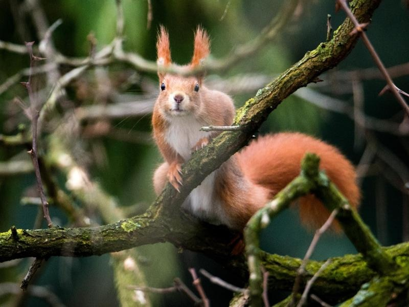

Infos
Das Eichhörnchen ist ein Nagetier, welches im Gegenteil zu den restlichen
Nagetieren in den Bäumen lebt, es ernährt sich hauptsächlich von Nüssen, Beeren usw. Es lebt in den
Bäumen in dem dass es ein kleines Haus in dem Baum baut. Über den Winter besorgen sich die Eichhörnchen
einen Wintervorrat aus Nüssen und sonstigem Essen. Diese werden entweder an den Ästen aufgehängt oder es
vergräbt sie in den Boden. Während des Winters als es wenig Essen gibt fangen die Eichhörnchen an ihre
Vorräte aufzubrauchen. Doch manchmal vergessen die Eichhörnchen wo sie ihre Nüsse vergraben haben.
Das Eichhörnchen hat sehr starke Krallen womit sie sich an Bäumen festheben können. Dank ihrem leichten
Gewicht, sind sie blitzschnell und so leicht dass falls sie vom Baum runterspringen wollen würden sie
durch die Luft gleiten würden und wie ihr eigener Fallschirm sich verhalten. In der Luft kontrollieren
die Eichhörnchen wo sie hinfliegen mit Hilfe ihres grossen, flauschigen Schwanzes. Theoretisch könnten
sie aus beliebiger Höhe springen und sicher auf dem Boden landen.
Infos
Das Eichhörnchen ist ein Nagetier, welches im Gegenteil zu den restlichen
Nagetieren in den Bäumen lebt, es ernährt sich hauptsächlich von Nüssen, Beeren usw. Es lebt in den Bäumen
in dem dass es ein kleines Haus in dem Baum baut. Über den Winter besorgen sich die Eichhörnchen einen
Wintervorrat aus Nüssen und sonstigem Essen. Diese werden entweder an den Ästen aufgehängt oder es vergräbt
sie in den Boden. Während des Winters als es wenig Essen gibt fangen die Eichhörnchen an ihre Vorräte
aufzubrauchen. Doch manchmal vergessen die Eichhörnchen wo sie ihre Nüsse vergraben haben.
Das Eichhörnchen hat sehr starke Krallen womit sie sich an Bäumen festheben können. Dank ihrem leichten
Gewicht, sind sie blitzschnell und so leicht dass falls sie vom Baum runterspringen wollen würden sie durch
die Luft gleiten würden und wie ihr eigener Fallschirm sich verhalten. In der Luft kontrollieren die
Eichhörnchen wo sie hinfliegen mit Hilfe ihres grossen, flauschigen Schwanzes. Theoretisch könnten sie aus
beliebiger Höhe springen und sicher auf dem Boden landen.